Ontwikkeling van de textiel in Twente
(Teksten uit: "versie 12 aug.docx", Riet Martens)
Leuk dat je deelneemt aan de audiotour “ontwikkeling van de textiel in Twente” van de Museum Fabriek. In deze audiotour voeren we je langs allerlei grote en kleinere objecten in het museum, en vertellen daarbij over de ontwikkeling van de textiel in Twente: van huisnijverheid tot textielindustrie.
Luisterpunten in deze tour
-
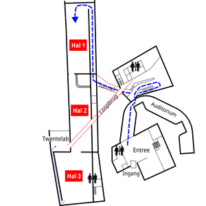
1. De ontwikkeling van textiel in Twente -
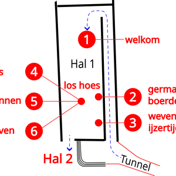
Plattegrond Hal 1 -
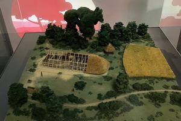
2. Germaanse boerderij en spinklosjes -
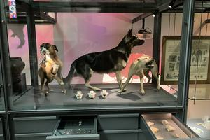
3. Sporen van weven in de IJzertijd -
4. Los hoes – vlas van stengel naar vezel
-
5. Los hoes – spinnen op het spinnewiel
-
6. Los Hoes – weven
-
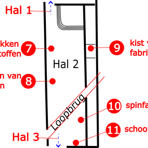
Plattegrond hal 2 -
7. Bedrukken van stoffen
-
8. Verven van stoffen
-
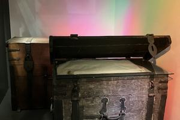
9. Fabriqueurskist van Abraham ter Horst -
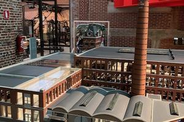
10. Model spinfabriek -
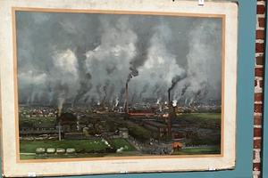
11. Schoolplaat ‘Fabrieksstad Enschede’ -
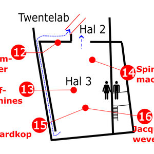
Plattegrond Hal 3 -
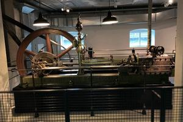
12. Stoomkelder -
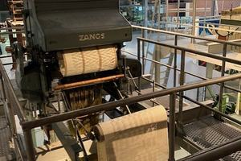
13. Vier weefmachines -
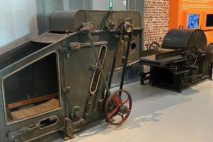
14. Spinmachines -
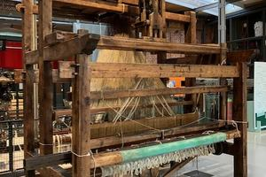
15. Snelweefgetouw met Jacquardkop - het snel weven -
16. Snelweefgetouw met Jacquardkop – Jacquardweven
-
17. Twee keer Gerrit, maar uit verschillende werelden
-
18. Arbeidsmigranten
-
19. Neergang van de textielindustrie
-
20. Innovaties in textiel
-
21. Tenslotte...
-
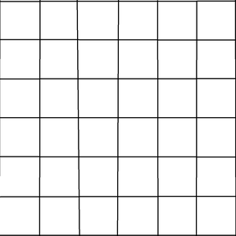
test